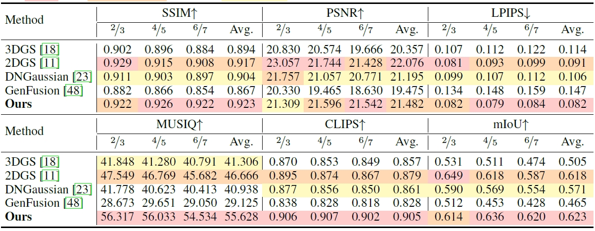
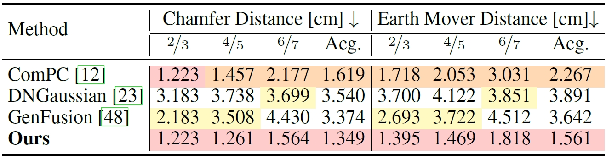

Abstract
Viewpoint missing of objects is common in scene reconstruction, as camera paths typically prioritize capturing the overall scene structure rather than individual objects. This makes it highly challenging to achieve high-fidelity object-level modeling while maintaining accurate scene-level representation. Addressing this issue is critical for advancing downstream tasks requiring detailed object understanding and appearance modeling. In this paper, we introduce Refine Any object In any ScenE that leverages 3D generative priors to recover fine-grained object geometry and appearance under missing views. Starting from substituting degraded objects with proxies, via a 3D generative model with strong 3D understanding, RAISE progressively refines geometry and texture by aligning each proxy to its degraded counterpart in 7-DOF pose, followed by correcting spatial and appearance inconsistencies via registration-constrained enhancement. This two-stage refinement ensures the high-fidelity geometry and appearance of the original object in unseen views while maintaining consistency in spatial positioning, observed geometry, and appearance. Extensive experiments on challenging benchmarks show that RAISE significantly outperforms state-of-the-art methods in both novel view synthesis and geometry completion tasks. RAISE is made publicly available at https://github.com/PolySummit/RAISE.
Qualitative comparison with other methods.
Interactive qualitative comparisons with other methods. The columns from left to right are resulted target objects from 3D Gaussian Splatting (3DGS), 2D Gaussian Splatting (2DGS), DNGaussian, GenFusion, and RAISE correspondingly. These results are all chosen from results of the medium difficulty setting.
Quantitative comparison on appearance.
Quantitative comparisons in the rendering quality are calculated on average in all scenes mentioned in the paper. The best, the second best, and the third best are highlighted.
Quantitative comparison on geometry.
Quantitative comparisons in the geometry quality. The data listed represents the average values of the relevant data across 50 constructed scenarios.
BibTeX
@misc{chen2025refineobjectscene,
title={Refine Any Object in Any Scene},
author={Ziwei Chen and Ziling Liu and Zitong Huang and Mingqi Gao and Feng Zheng},
year={2025},
eprint={2506.23835},
archivePrefix={arXiv},
primaryClass={cs.CV},
url={https://arxiv.org/abs/2506.23835},
}